시작 전에: 기기·언어·인덱싱
새 Siri AI(Artificial Intelligence)는 Apple과 Google이 협력해 Gemini를 바탕으로 만든 버전이에요. 한국어는 iOS 27.2부터 쓸 수 있어요. 먼저 기기가 Apple Intelligence를 지원해야 해요.
아래 화면은 Apple Intelligence가 호환되는 기기 목록이에요. 왼쪽 두 줄이 아이폰, 가운데가 아이폰과 아이패드, 오른쪽이 맥이에요. 영상은 아이폰 15 Pro, M1을 넣은 맥북과 아이패드를 예로 들어요.
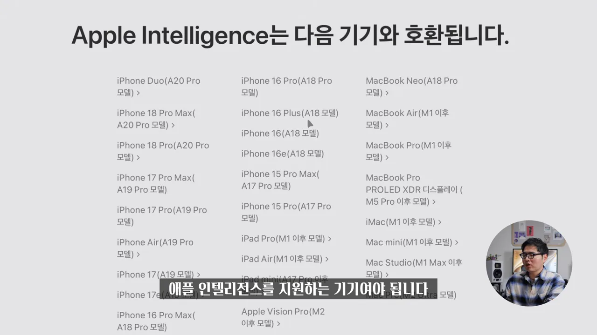
켜졌는지 확인하기
설정의 Siri 항목을 열면 확인할 수 있어요. Siri 아이콘이 은색으로 바뀌고 '베타' 표시가 붙어 있으면 켜진 상태예요. 이때 기기 언어와 Siri 언어가 같아야 해요. 영상에서 Siri는 한국어로 둔 채 기기 언어만 영어로 바꾸자, 예전 Siri로 돌아가 버렸어요.
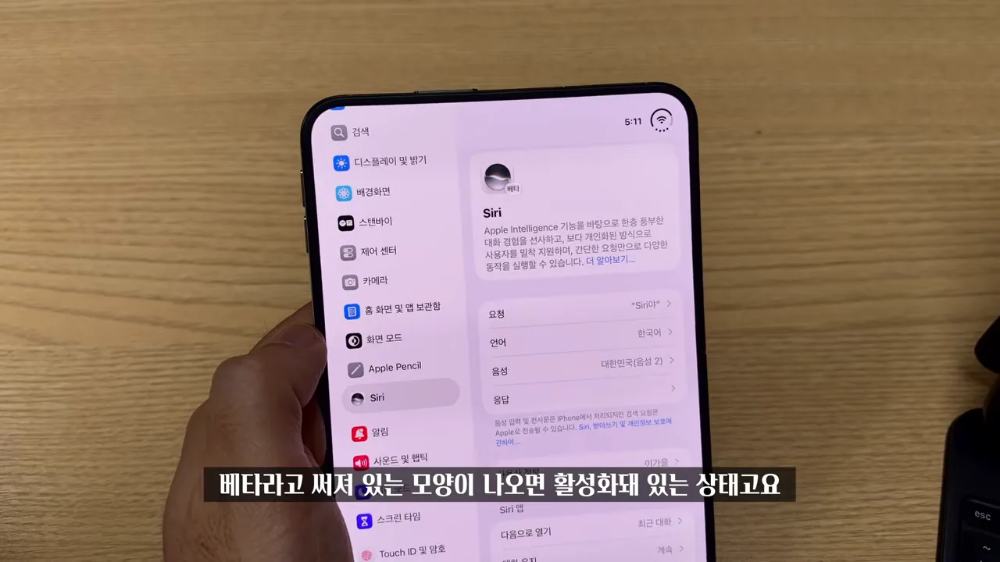
한국어 Siri는 아직 고급 음성 모델을 지원하지 않아요. 목소리나 말투는 예전과 크게 다르지 않다는 뜻이에요.
업데이트 직후에는 인덱싱을 기다려요
새 Siri는 기기 속 문자·메일·파일을 찾아 답하기 위해 인덱싱을 처음부터 다시 해요. 기기를 새로 샀거나 막 업데이트했다면 설정에 '인덱싱 중'이 표시돼요. 이게 끝나야 검색 결과가 제대로 나오고, 그동안은 기기가 조금 뜨거워질 수 있어요.
설정과 부르는 법
본격적으로 쓰기 전에 설정에서 몇 가지를 정해 두면 편해요. 영상이 짚은 항목을 정리하면 이래요.
| 설정 위치 | 항목 | 켜면 달라지는 점 |
|---|---|---|
| Siri → 요청 | 음성으로 부르기, 측면 버튼 | "시리야"나 측면 버튼으로 부를지 정해요 |
| Siri → 응답 | 음성 응답 | 대답을 말로 들어요 |
| 손쉬운 사용 → Siri | 타이핑으로 Siri 사용 | 측면 버튼을 누르면 바로 입력창이 떠요 |
| 손쉬운 사용 → Siri | 말하기 속도 | 답답하면 빠르게 바꿔요(영상은 123%) |
| 손쉬운 사용 → Siri | 항상 듣기 | 기기가 덮여 있거나 가려져 있어도 불러요 |
| 손쉬운 사용 → Siri | 요청 내용 항상 표시 | 내가 한 말이 자막으로 보여요 |
| 손쉬운 사용 → Siri | 통화 종료 | "전화 끊어"로 통화를 끊어요 |
응답 화면에서는 '선호하는 응답 유형'으로 음성 응답과 무음 응답 중 하나를 골라요. 체크 표시가 음성 응답에 있으면 대답을 소리로 들어요.
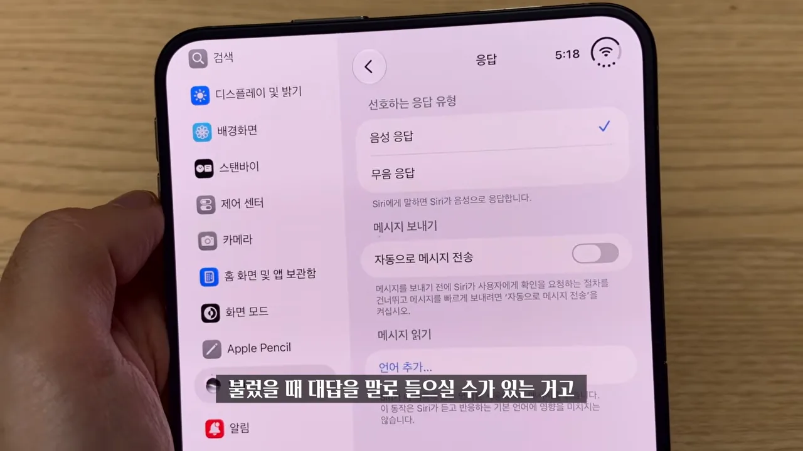
'타이핑으로 Siri 사용'은 손쉬운 사용 안에 있어요. 화면의 측면 버튼 항목에서 '음성' 대신 '타이핑으로 Siri 사용'에 체크하면, 버튼을 눌렀을 때 말하는 대신 입력창이 떠요.
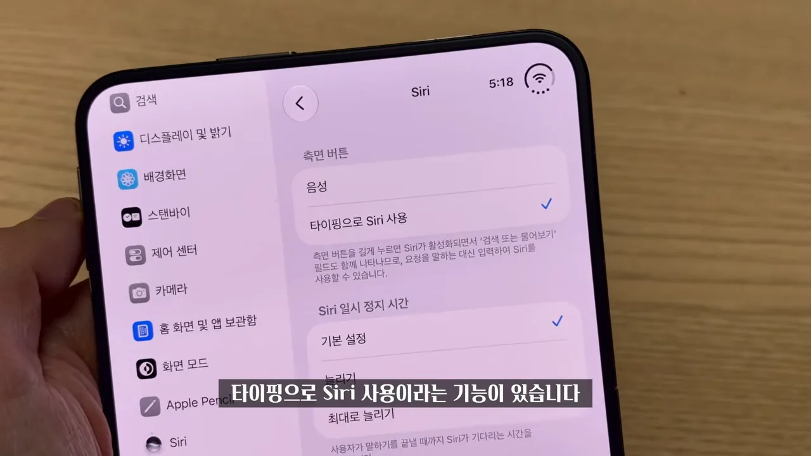
같은 화면 아래쪽에 말하기 속도 슬라이더가 있어요. 영상은 123%로 올려 두었고, 뒤의 날씨 데모에서 Siri가 실제로 빠르게 대답해요.
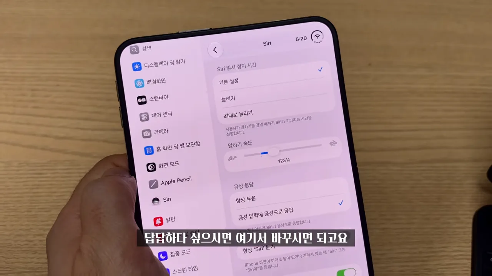
통화 종료를 켜 두면 통화 중에 "전화 끊어"라고만 해도 Siri가 끊어 줘요. 화면 설명에는 상대방도 Siri가 끊는 말을 들을 수 있다고 적혀 있어요.
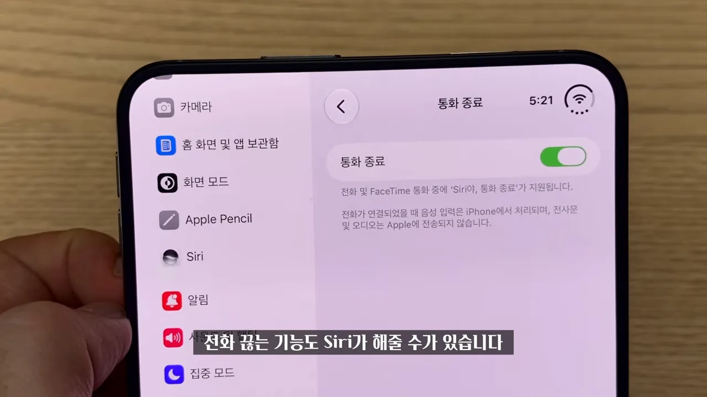
새 Siri를 부르는 방법
부르는 동작이 바뀌었어요. 아이폰과 아이패드는 화면 가운데를 아래로 쓸어내리면 Siri가 부드럽게 튀어나와요. 위쪽에 '검색 또는 물어보기' 입력창이 생기고, 조금 더 내리면 Siri 창이 열려요.
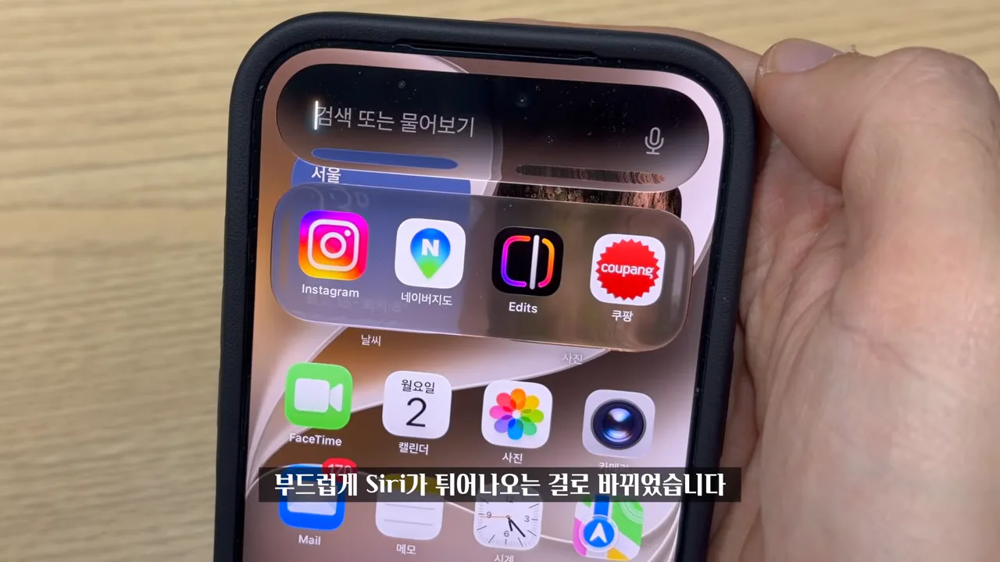
맥에서는 메뉴 막대 오른쪽 위에 Siri 아이콘이 있어요. 누르면 같은 Siri가 나오고, 키보드의 검색 키나 Command+Space로도 불러요. 아이패드에서도 검색 키와 Command+Space가 똑같이 통해요.
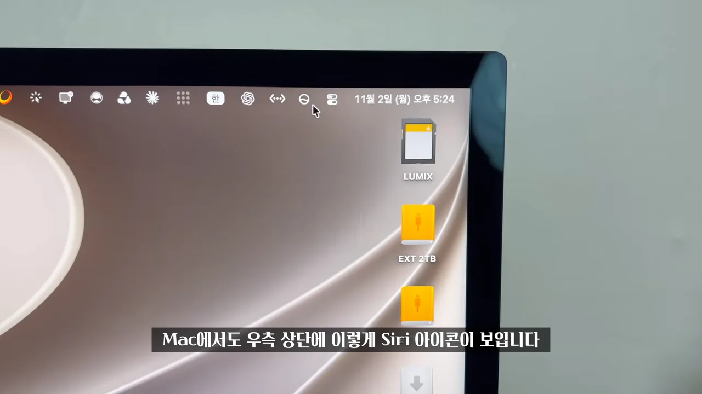
"시리야"로 부르거나 측면 버튼을 눌러도 돼요. 측면 버튼으로 바로 말할지, 입력창을 띄울지는 위에서 고른 설정을 따라가요.
따로 생긴 Siri 앱
Siri 전용 앱도 생겼어요. 왼쪽에 지난 대화 목록이 쌓이고, 오른쪽에 답이 열려요. 아래 화면은 "존 터너스 사진은?"이라고 묻자 사진을 여러 장 보여 준 모습이에요.
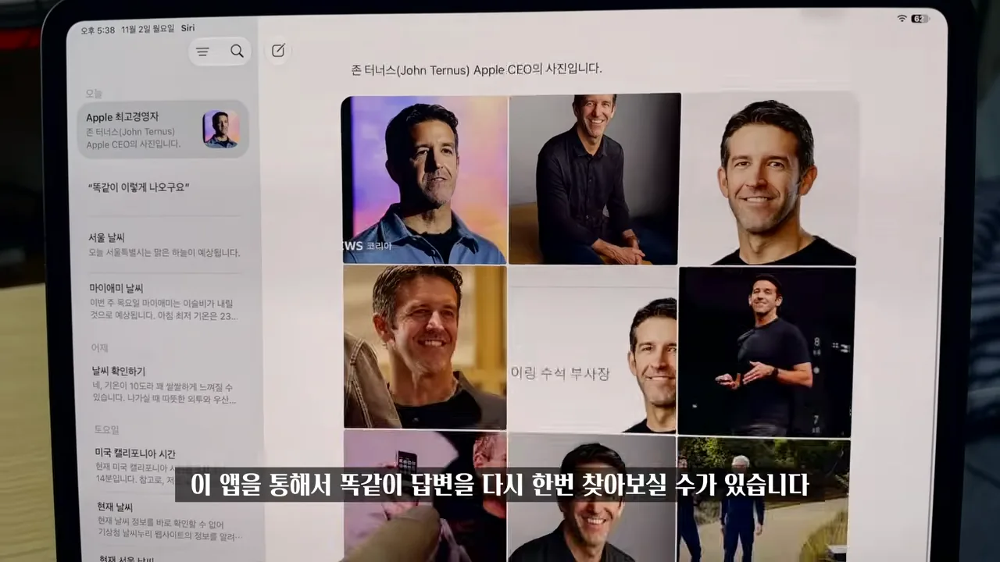
내 정보와 인터넷 정보 찾기
영상은 새 Siri가 답할 때 참고하는 곳을 세 갈래로 나눠 보여 줘요. 내 기기 속 정보인 개인 맥락, 인터넷 정보인 세계 지식, 그리고 지금 화면에 떠 있는 내용이에요. 이 절은 앞의 두 가지를, 다음 절은 화면 인식을 다뤄요.
문자에서 병원 예약 시간 찾기
첫 데모는 "오늘 갔던 병원, 이름은 말하지 말고 시간만 말해 봐"예요. Siri는 '오전 11시 30분이었습니다'라고 답했어요. 답 아래 작은 '메시지' 표시가 출처예요. 받은 예약 문자를 보고 알아낸 거예요.
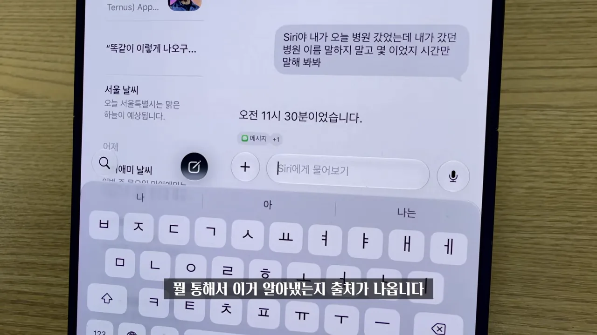
Siri를 다시 불러도 방금 한 대화가 제안으로 떠요. 그래서 "다음 예약은 며칠인지 날짜만"처럼 앞 대화를 이어서 물을 수 있어요. 영상에서는 17일 예약을 찾아냈어요.
메일을 찾아 할 일과 메모로
메일에서도 찾아요. "최근 메일 중 체크카드 갱신 관련 내용이 있을 거야. 찾아서 내일 오후 2시 미리 알림으로 등록해 놔"라고 하자, Siri는 토스뱅크 카드 유효기간 만료·갱신 안내 메일을 찾아 '업무 처리' 목록에 할 일을 넣었어요.
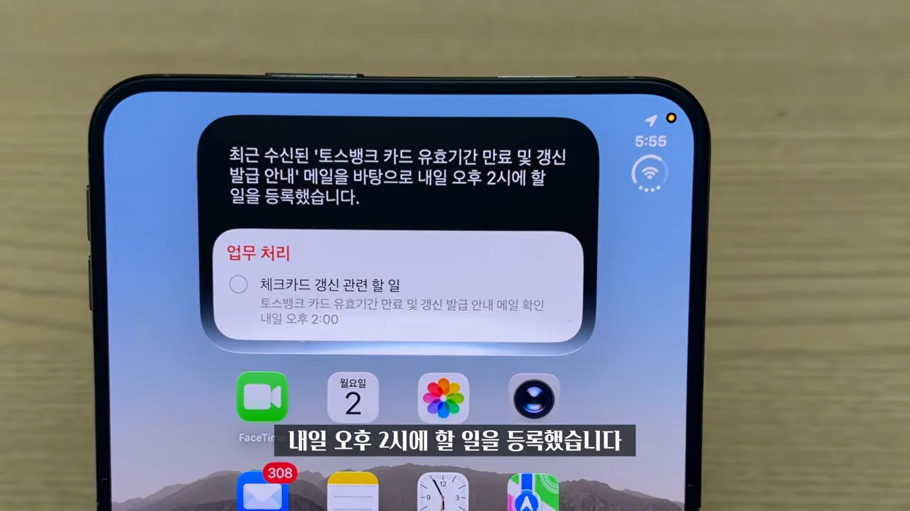
영상은 여기서 요령 하나를 강조해요. Siri가 알아들을 만한 구체적인 단서를 넣어서 말하라는 거예요. 개인 메일과 업무 메일을 함께 등록해 두어도 상관없이 찾아요. "ChatGPT에서 온 메일을 찾아 봐"라고 하자 11월 2일에 온 'Chat과 Work, 이제 한곳에서' 안내 메일을 짚었어요.
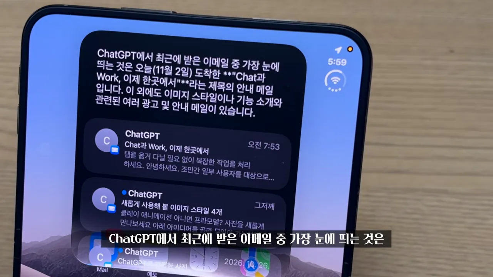
파일과 사진도 찾아요. 'iCloud Drive에서 영어 동물 이름이 들어간 PNG 파일', '지난주 미국에서 찍은 사진 중 멕시칸 음식 사진'을 찾아냈어요. 다만 베타라서 같은 요청에도 답이 나올 때와 안 나올 때가 있었어요. 구체적으로 말할수록 잘 찾아요.
모든 앱을 뒤지지는 못해요
한계도 보여 줘요. 카카오톡으로 잡은 12월 식사 약속이 언제냐고 묻자, Siri는 캘린더에 있던 12월 4일 일정을 대신 찾아왔어요. 영상의 설명은 이래요. Siri가 앱을 대신 쓰려면 앱이 먼저 App Intents로 '나는 이런 기능이 있고 이런 내용을 갖고 있어'라고 알려 줘야 해요.
반대로 특정 앱을 Siri에서 빼고 싶을 수도 있어요. Siri 설정 안의 '제외된 앱'에서 '앱 추가'를 누르면 그 앱이 Siri 검색에서 빠져요. 취향에 따라 골라 두면 돼요.
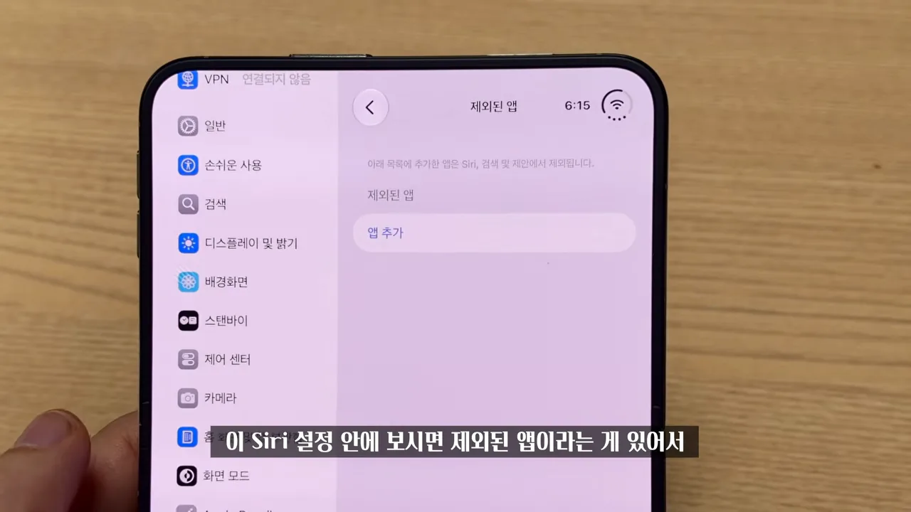
인터넷 정보 찾기: 세계 지식
내 정보만이 아니라 인터넷 정보도 찾아와요. 영상은 이걸 세계 지식이라고 불러요. 이때 보여 준 구조도는 왼쪽이 기기 안(On-device), 오른쪽이 클라우드(Cloud)예요. 기기 안의 iOS 안에서 사용자 요청이 'Assistant experience'로 들어가고, 아래 'System orchestrator'가 앱들과 이어져요.
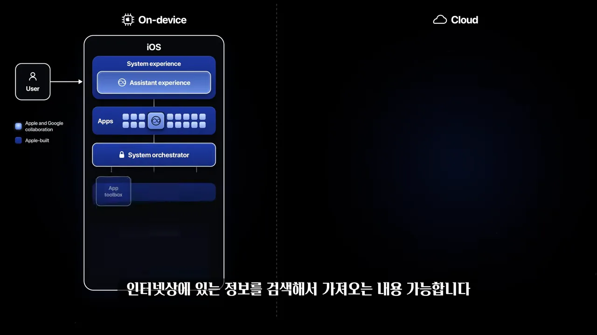
데모 질문은 "요즘 한국 젊은 층에서 인기라는 과일 찹쌀떡이 뭔지 찾아 봐"였어요. Siri는 생과일을 통째로 넣은 퓨전 디저트라고 설명했어요. "브랜드 이름은?"이라고 이어 묻자 한정선, 자이소, 연백딸기모찌 같은 이름을 댔어요. Siri 앱에서는 아래처럼 더 긴 답과 출처(Daum, 국민일보 등)를 볼 수 있어요.
영상의 평가는 담백해요. 이런 검색은 Gemini, Claude, ChatGPT가 훨씬 낫지만 간단히 쓰기에는 나쁘지 않다는 거예요.
화면을 보고 일하는 Siri
영상이 가장 마음에 든다고 꼽은 기능이에요. 화면 인식은 지금 떠 있는 화면을 Siri가 읽고, 그 내용을 두고 대화하는 기능이에요. "이거", "화면에 보이는 것"이라고만 해도 무엇을 말하는지 알아들어요.
알람을 한 번에 정리하기
알람이 열몇 개 걸린 시계 앱을 띄워 두고 "지금 화면에 보이는 것 중 가장 빠른 게 몇 시지?"라고 물었어요. 화면에는 오전 10:30, 7:14, 7:16, 8:10부터 11:06까지 알람 카드가 격자로 늘어서 있어요.
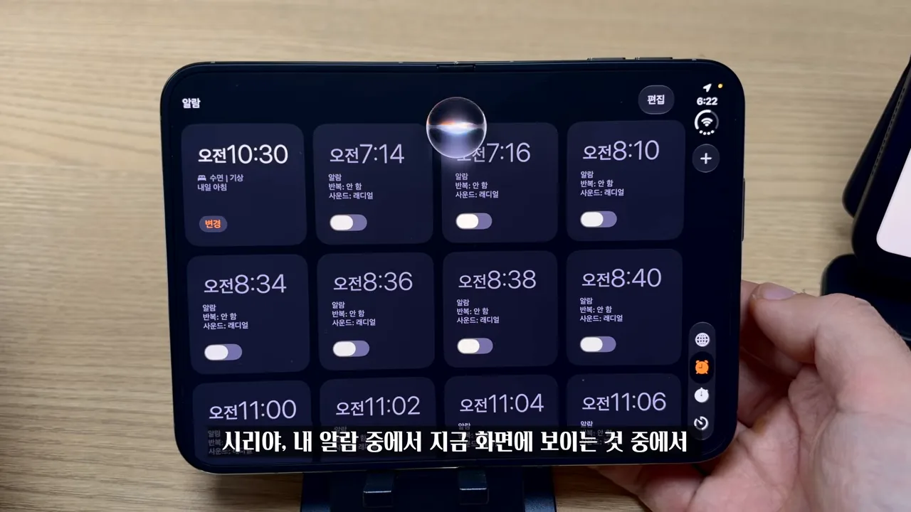
이어서 "그거 삭제해 줘"라고 하자, 7시 14분 알람을 지울지 확인하는 창이 떴어요. '알람 삭제'를 누르면 끝이에요.
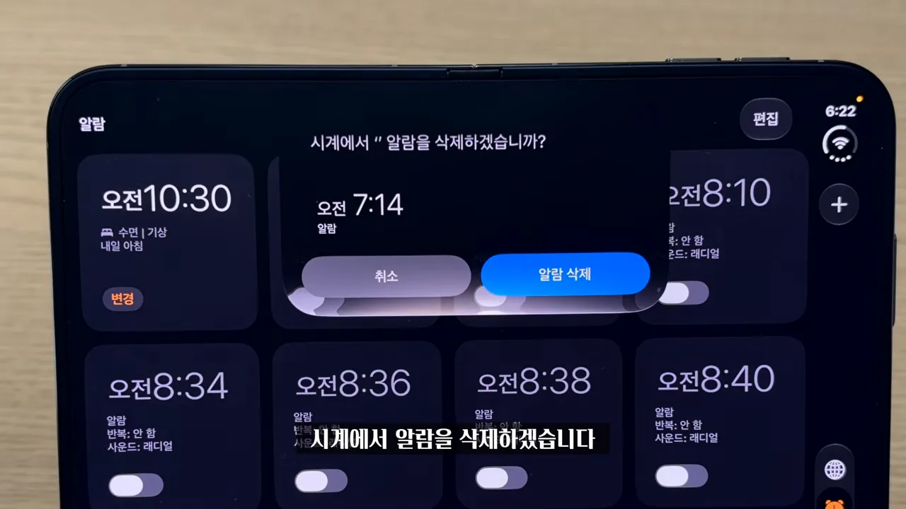
더 복잡한 요청도 돼요. "제일 늦은 것부터 다섯 개 삭제해 줘"는 한 번에 처리했고, "가장 빠른 7시 16분을 7시 20분으로 바꾸고 2분 간격으로 세 개만 더 추가해 줘"도 해냈어요. 원래 Siri로 알람을 많이 맞췄다면, 이제 훨씬 고차원적으로 시킬 수 있다는 게 영상의 평가예요.
포스터를 보면서 캘린더에 등록
인터넷에서 공연 포스터를 보다가 Siri를 내리고 "캘린더에 공연 등록"이라고만 했어요. 결과 창에 '2026년 12월 31일에 공연 일정을 캘린더에 등록했습니다'가 떴어요. 요청하지 않았는데도 장소('KINTEX HALL 7-8')를 포스터에서 읽어 함께 넣었어요.
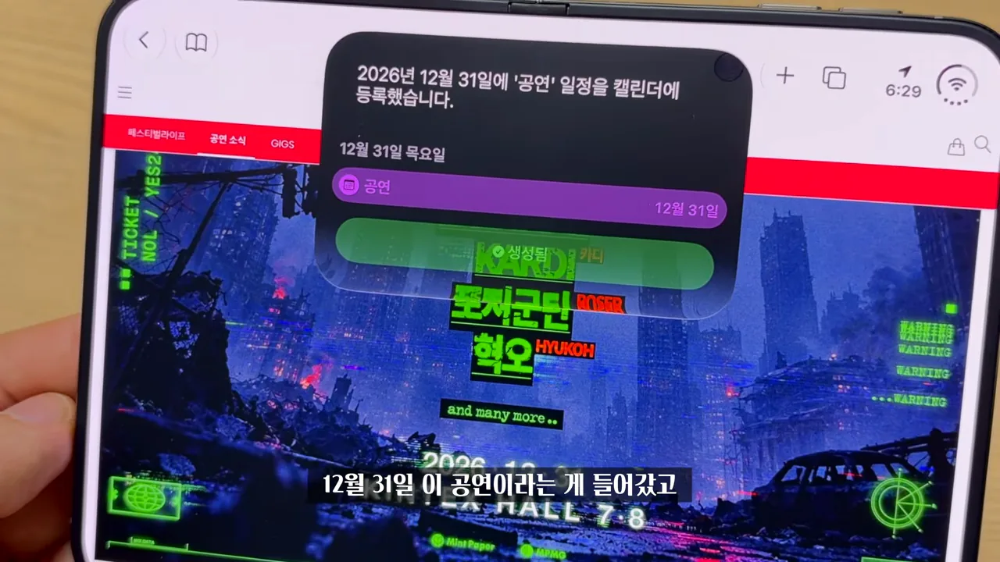
일정 이름이 '공연'이라 마음에 안 들었어요. 캘린더 일정을 띄워 둔 채 "락 페스티벌이라고 바꿔"라고만 하자, Siri가 이벤트 이름을 바꿀지 물었어요. 화면에 맥락이 있으니 무엇을 바꾸라는 건지 따로 말할 필요가 없어요.
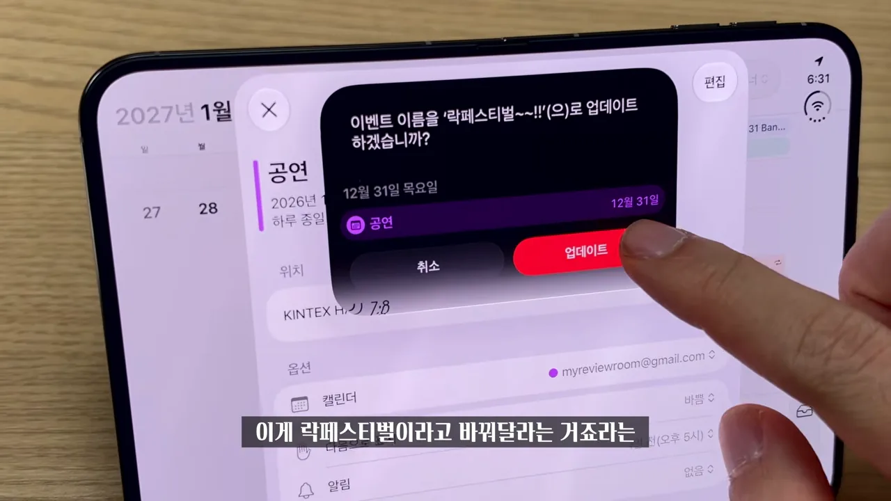
화면 글을 메모로 옮기기
인스타그램 글을 복사해 옮기기 귀찮을 때도 써요. "화면에 있는 텍스트 복사해서 메모 앱에 적어 놔"라고 하면 새 메모가 생겨요. 이어서 "메모 이름 바꿔"라고 하자 Siri가 새 이름을 물었고, 'Netflix 볼 거'로 바꿨어요.
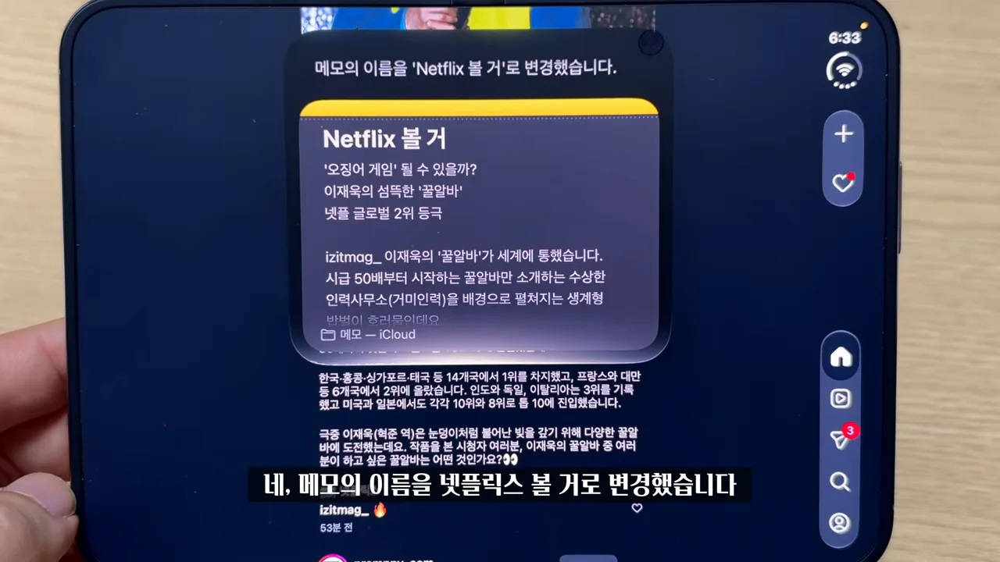
외국 사이트와 형광펜 친 부분
일본어 쇼핑 페이지를 보며 "화면 내용 한국어로 설명해 줘"라고 하자, 잇몸 건강을 위한 소금이라는 내용을 정리해 줬어요. 특징, 효능, 사용감을 항목으로 나눠 요약했어요.
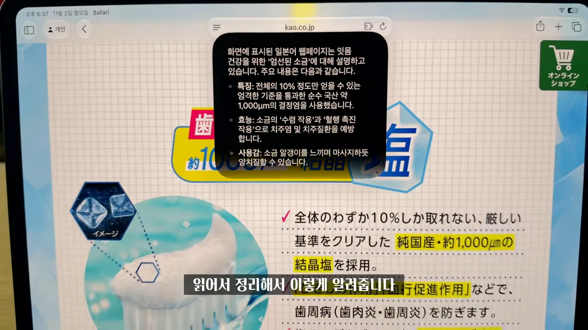
범위를 좁혀 물을 수도 있어요. 페이지에 노란 형광펜이 칠해진 문구들이 있는데, "형광펜 친 부분만 설명해 줘"라고 하면 그 부분만 골라 설명해요.
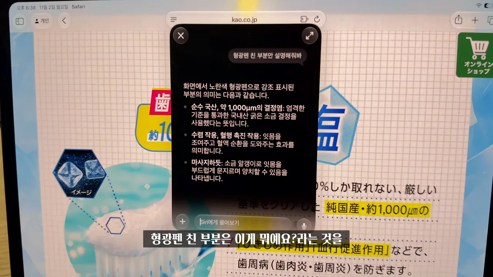
카메라 속 Siri: 비주얼 인텔리전스
카메라 앱 모드에도 Siri 항목이 생겼어요. 비주얼 인텔리전스로 비춘 물건을 바로 알아봐요. 마우스 상자를 비추자 '로지텍 MX Anywhere 3S'라고 짚고 특징을 설명했어요.
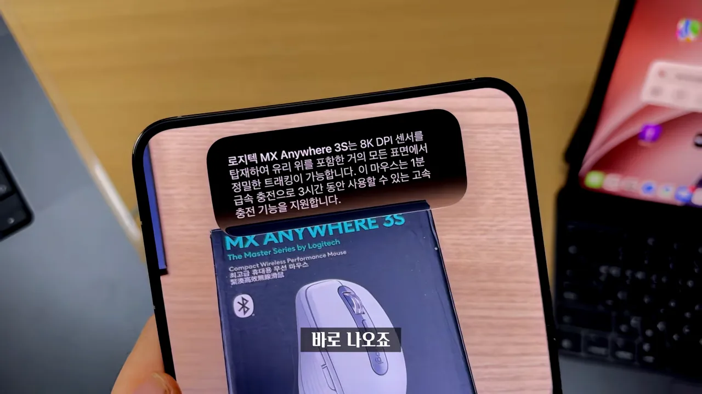
쓰다가 궁금한 버튼이 있을 때도 돼요. 카메라 옆면에 'QS'라고 적힌 버튼을 비추자, 그게 무슨 버튼인지 찾아 알려 줬어요.
Siri로 글쓰기
글을 쓰거나 다듬을 때도 Siri를 불러요. 앞에서 인스타 글을 옮겨 둔 'Netflix 볼 거' 메모로 시작해요. Siri 표시를 누르고 "불릿 포인트로 요약해서 아래에 첨부해 줘"라고 화면을 보며 말하기만 하면 돼요.
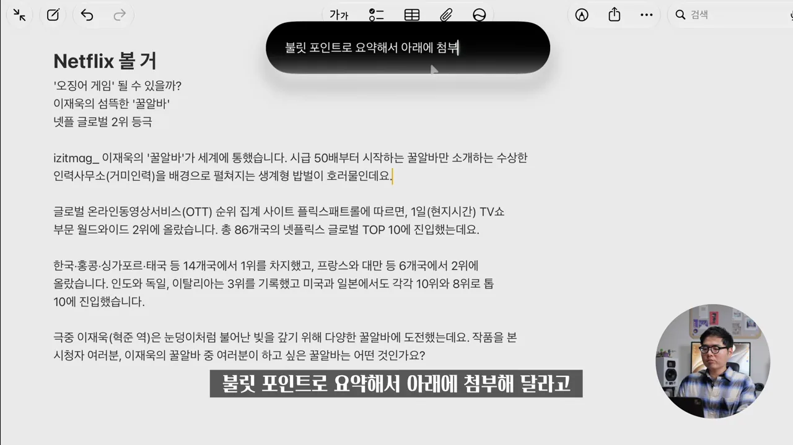
일부만 고칠 수도 있어요. 문단을 선택하면 그 자리에 Siri 버튼이 떠요. 여기서 "이 내용을 절반 길이로 줄이고 이모지 첨부해 줘"처럼 원하는 부분만 요청해요.
카톡 입력창에서 바로 쓰기
처음부터 쓸 때는 입력창을 누르면 키보드 위에 'Siri로 글쓰기'가 나와요. 영상은 카톡에서 "잘 들어가셨나요? 즐거웠어요"라는 내용을 "좀 더 정중하게 세 문장으로 써 주세요"라고 요청했어요.
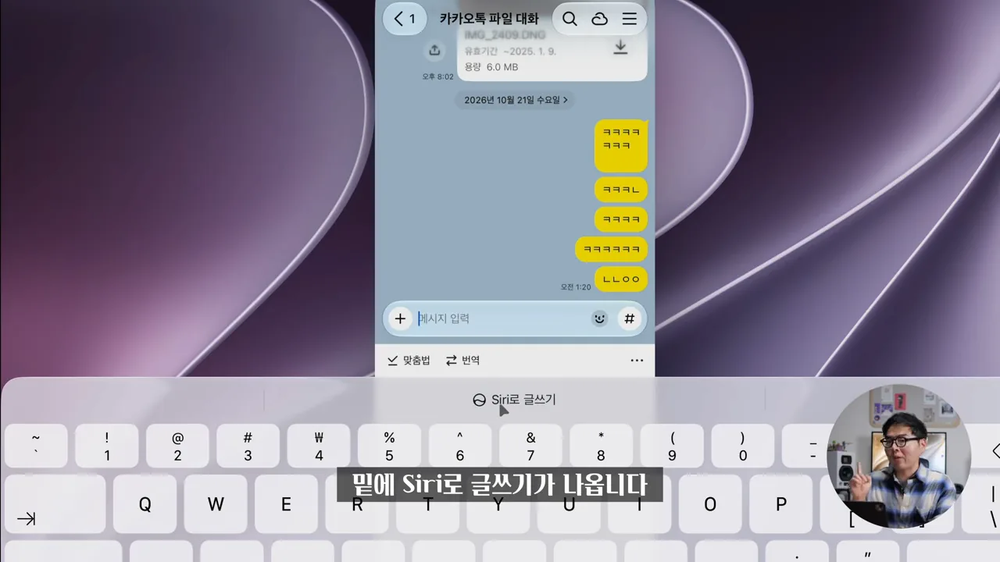
나온 문장이 마음에 안 들면 선택한 뒤 아래 도구에서 '재작성'을 눌러 다른 버전을 받아요. 아니면 다시 Siri 버튼을 눌러 "한 문장으로, 이모지랑 같이"처럼 주문을 바꿔도 돼요.
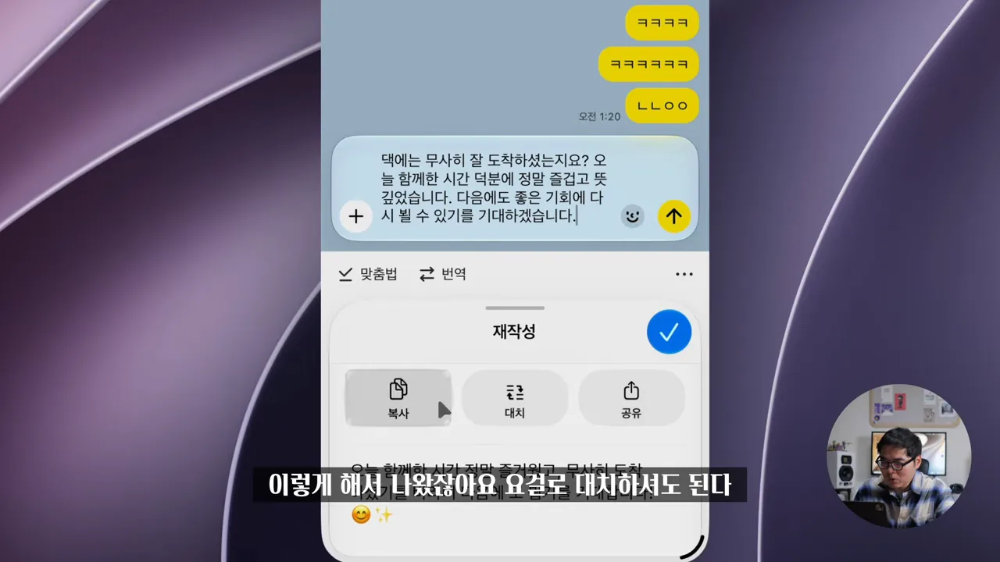
생활 속 명령과 여러 단계 요청
말귀를 알아듣는 능력이 좋아져서, 영상 제작자가 자주 쓴다는 자잘한 명령들이 있어요. 하나씩 보면 이래요.
홈 조명과 자동화
"지금 켜져 있는 내 방 천장등 꺼 줘", "다시 켜 줘"는 기본이에요. 재미있는 건 자동화까지 이어진다는 점이에요. "그 천장등을 두 시간 뒤에 끄도록 자동화 예약해 줘"라고 하자 오후 9시 7분에 꺼지도록 설정했어요. "내일 일출 시간에 맞춰 켜는 자동화"도 만들었어요.
놓친 알림 읽고 바로 열기
"최근에 온 알림 하나 읽어 줘"라고 하자, Siri가 시리즈 앱에서 온 웹툰 광고 알림을 읽어 줬어요. 이어서 "해당 앱 열어 줘"라고 하면 그 앱이 바로 열려요.
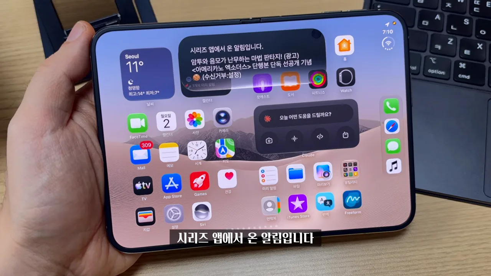
Apple Watch에서도
Siri AI를 지원하는 워치에서는 손목에서 바로 시켜요. "내 업무용 이메일 주소 좀 찾아 줘"라고 하자 연락처에서 찾은 주소를 보여 줬고, "이거 메모 앱에 복사해 넣어 줘"로 '업무용 이메일 주소'라는 메모까지 만들었어요.
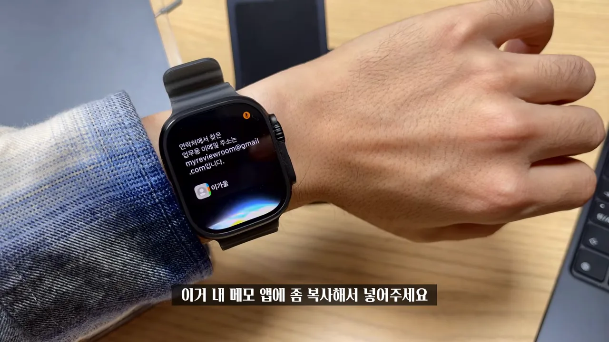
의외로 되는 것들
"핫스팟 켜 줘"처럼 짧은 설정 명령도 빠릿하게 처리해요. 사진을 띄워 두고 "지금 보이는 사진 먹음직스러운 이미지로 자동 보정해 줘"라고 하면 사진 앱 편집 화면에서 색을 진하게 하는 등 여러 값을 바꿔요.
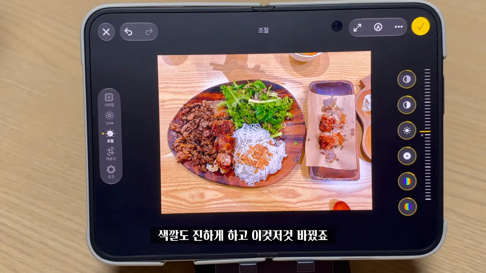
영상 위에 작게 뜬 음악 제목도 읽어요. "화면 위에 나오는 음악 제목, Apple Music에서 찾아 줘"라고 하자 아이브의 'Looks Can Kill'을 찾아 재생 카드를 띄웠어요.
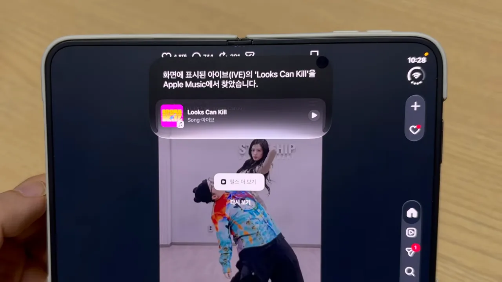
"지금 보이는 셀프캠 상태에서 사진 찍어 줘"라고 하면 3, 2, 1을 세고 찍어요. 이미지도 만들어요. "아까 찾아봤던 찹쌀떡을 스케치 이미지로 그려 줘"라고 한 뒤 "이 이미지 사진 앱에 추가해 줘"라고 하자 저장까지 됐어요.
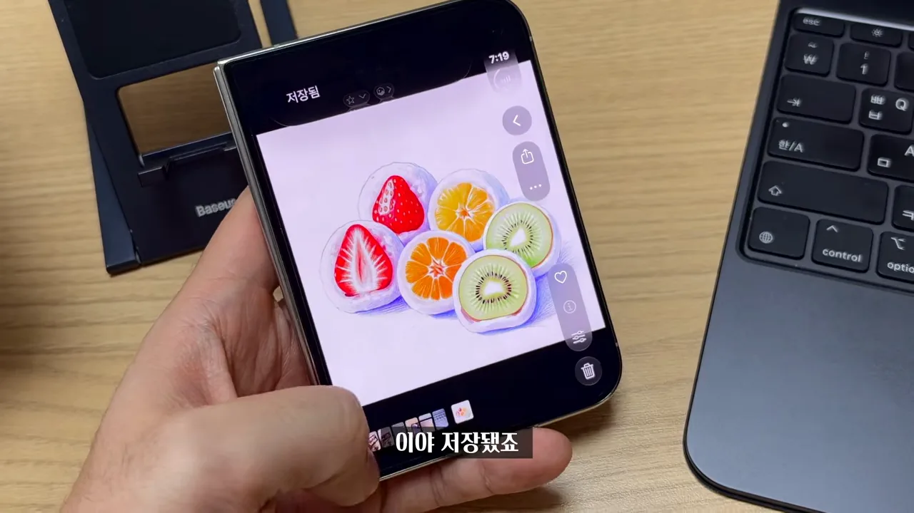
여러 단계를 한 번에
마지막은 복합 요청이에요. 영상은 '되게 제한적인데 되긴 된다'고 말해요. 네이버 뉴스 기사를 보면서 "1, 2, 3으로 요약해서 링크랑 같이 메모에 만들고, 내일 아침 미리 알림도 등록해"라고 했어요. Siri는 먼저 링크와 세 줄 요약이 담긴 메모를 만들지 물었어요.
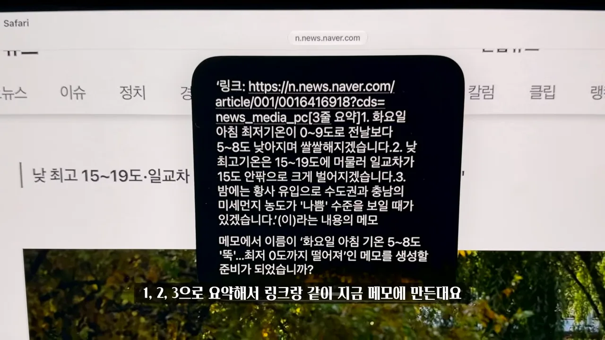
메모를 만든 뒤 Siri는 '내일 아침 7시에 미리 알림을 등록했다'고 알렸어요. 한 번의 요청이 메모 만들기와 미리 알림 등록 두 단계로 나뉘어 처리된 거예요.
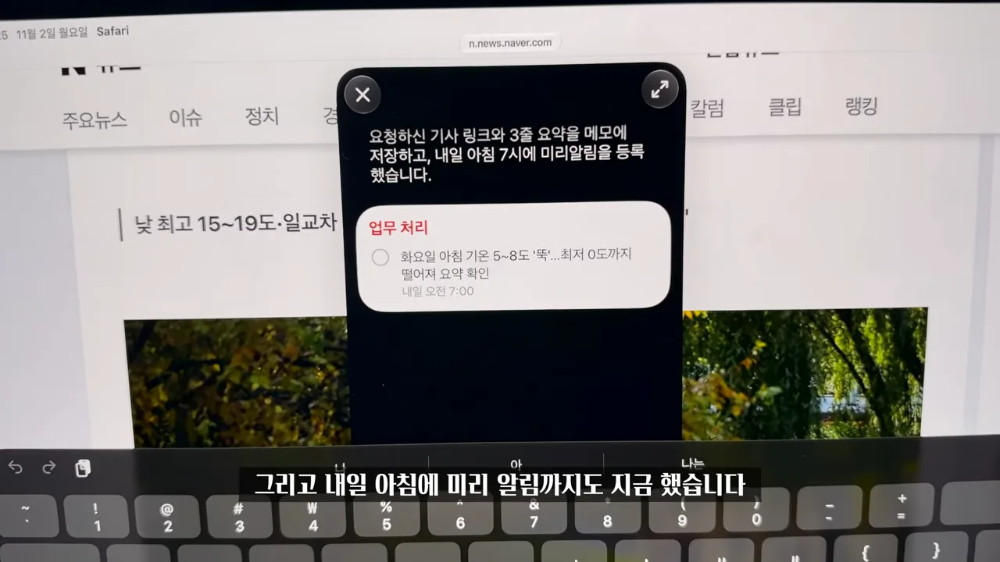
사용 한도와 베타의 한계
새 Siri를 무제한으로 쓸 수 있는 건 아니에요. 영상에 따르면 Apple의 비공개 클라우드 서버 모델에 기대는 Apple Intelligence 기능에는 하루 사용 한도가 정해져 있어요. 평소처럼 쓰는 정도면 크게 걸릴 일은 없지만, 앞으로 바뀔 수 있다고 해요.
또 Siri AI 자체가 아직 베타예요. 모델도 계속 바뀔 수 있고, 한국어에서는 고급 음성 모델도 아직 안 돼요. 영상은 이런 부분이 업그레이드되기를 기다려 봐야 한다고 하면서도, 기다린 만큼 생각보다 쓸 만하다고 마무리해요.